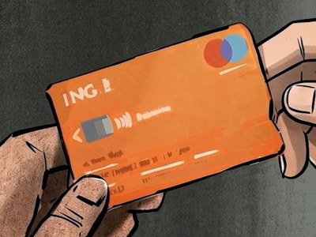
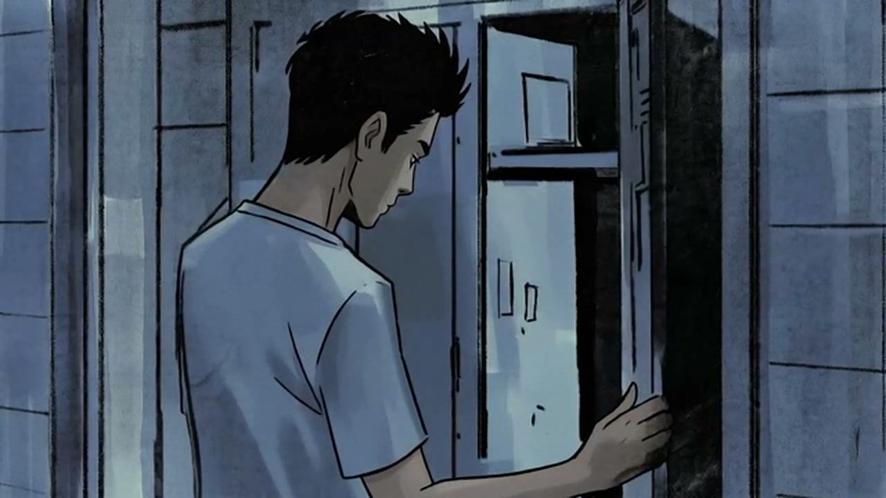
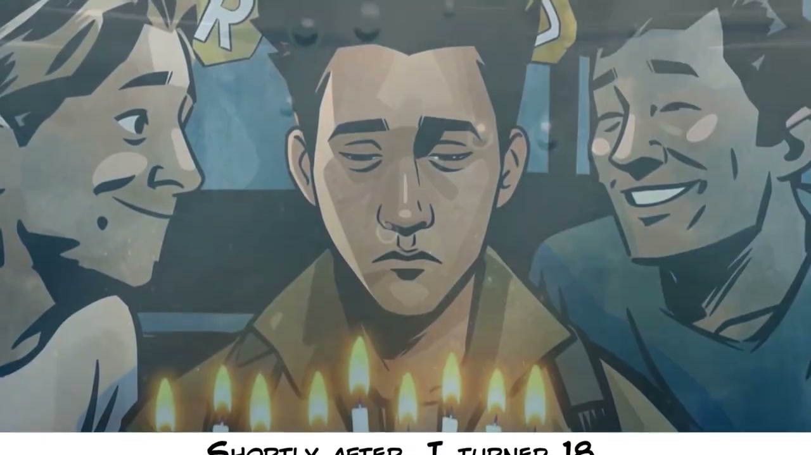
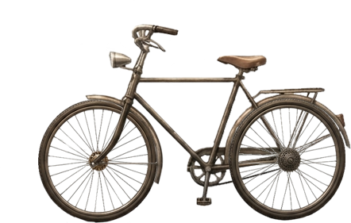
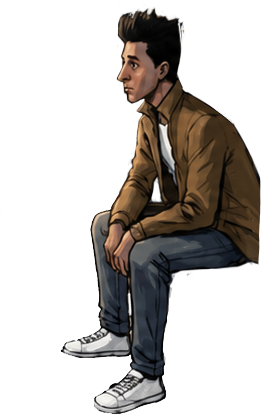
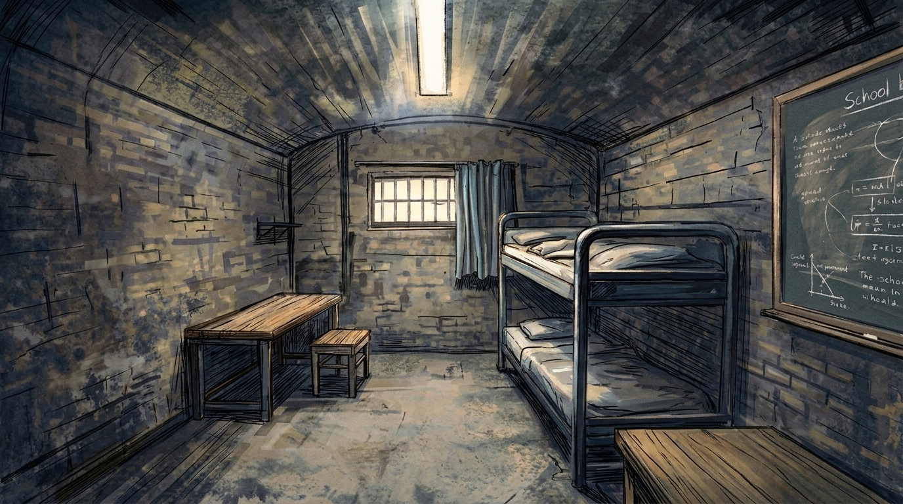
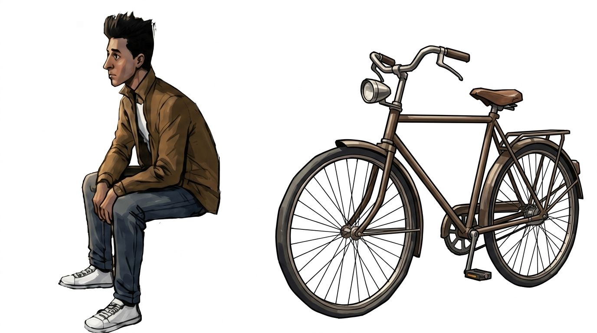
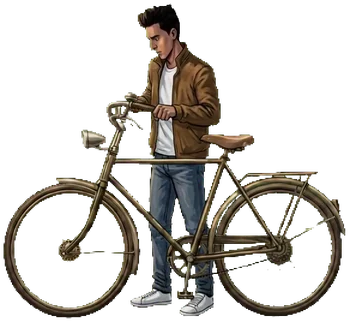
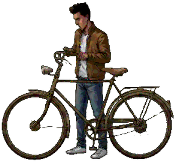

01 Visual Diagnosis: Video Artwork vs. Current Room
Side-by-side inspection of keyframes from Chapters 1–4 against the assets in www/room/assets/ reveals four concrete stylistic differences.

Thick, angular black ink outlines with broken hand-drawn strokes and broad chisel-tip marker fills. Color surfaces have flat, squarish brush marks and heavy paper grain.

Faceted, polygonal shading blocks on skin, T-shirt folds, and metal lockers. Zero smooth airbrushing; shadows are carved with squared-off Copic marker strokes.

Cheeks, nose bridge, and jacket lapels are sculpted out of hard-edged geometric color blocks (3–4 discrete tonal steps) rather than soft gradients.

bike.png & passport.png Too Clean / Photo-SoftRendered as a soft, semi-photorealistic painted cutout with no black ink outline and smooth cylindrical shading on the tubes and tires.

man.png & sp/*.webp Round Airbrushed GradientsSam has smooth airbrushed gradients on his cheek, nose, and jacket sleeves, rounder cartoon proportions, and higher golden-brown saturation.

room.jpg & bedfront.png Soft Tubular HighlightsWhile the brick wall has texture, the bunk bed frame, mattress, and desk use soft digital airbrush highlights instead of angular comic ink & square marker strokes.
| Visual Dimension | Video Chapters (Hoofdstuk 1–4) | Current Interactive Room (www/room/) |
What Needs to Change |
|---|---|---|---|
| Linework & Contours | Bold, variable-width black ink lines; sharp angular corners; rough sketchy cross-hatching in shadows. | Thin, smooth anti-aliased lines on Sam; zero black ink outlines on bike.png, passport.png, money.png. |
Add decisive, angular hand-inked black contours and interior crease lines to all room props and furniture. |
| Shading & Brushwork | Squarish chisel-tip marker look: flat polygonal facets, 3–4 stepped value blocks, visible broad-nib strokes. | Continuous, soft airbrush gradients and rounded specular highlights on faces, fabric, and metal tubes. | Replace smooth gradients with hard/semi-hard polygonal marker blocks and directional chisel-marker strokes. |
| Surface Texture | Gritty dry marker streak texture + tactile paper grain across all fills. | Clean digital paint on foreground objects and sprites. | Bake dry marker tooth & subtle paper grain into restyled assets (plus optional screen-space grain in Three.js). |
| Color Palette | Muted, high-contrast graphic novel palette (earthy olive-ochre, slate blue-grey, deep ink blacks). | Slightly warmer, cleaner digital illustration saturation on Sam's jacket and room props. | Shift midtones toward desaturated olive/ochre and deepen shadow blacks to anchor objects to the room. |
02 Proof of Concept: Gemini Image-to-Image Rerendering
Drag the slider below to compare the current room.jpg against our Gemini proof-of-concept rerender, generated by feeding the chapter artwork as style references while locking the exact room geometry and perspective.


assets/room.jpg)room.jpg Feasibility: High
Notice how Gemini preserves the exact pixel coordinates of the skylight, barred window, curtain, bunk bed posts, desk, stool, and blackboard chalk equations—meaning all hardcoded coordinates in app.js (LAYERS, CHAPTERS[i].hit, BEAMS, boardPlane, and stackPlane) continue to line up without code rewrites.

man.png, bike.png) Best for Static Layers
Feeding man.png and bike.png with card.jpg & ch2_locker.jpg as style references transforms the soft photographic bicycle and airbrushed character into crisp, hand-inked graphic novel illustrations with faceted marker shading.

→
sp/*.webp) Zero Temporal Flicker
For the 8 animated sprite sheets (549 total frames), a deterministic Square-Footprint Mode/Kuwahara + Stepped Marker Quantization + Ink Contour pass (either baked into sp/*.webp or run live in spriteFS GLSL) flattens round gradients into squarish marker blocks with zero frame-to-frame flicker.
03 Technical Constraints & Proposed 3-Part Fix Pipeline
www/room/app.js is a tightly calibrated 1920×1080 Three.js stage with 17 static image layers, 3 dynamic 2D canvas planes, and 8 pre-keyed WebP sprite-sheet animations. Here is how to rerender every asset group safely.
Files: room.jpg, bedfront.png, post.png, seat.png, board_clean.png
- Constraint:
bedfront.png([1056,440,244,362]),post.png([1210,510,50,538]), andseat.png([1140,777,105,178]) are depth-sorted cutouts ofroom.jpgso Sam can sit behind the bedpost and walk in front of the bed. - Fix: Generate the restyled 1920×1080
room.jpgfirst. Then programmatically cropbedfront.png,post.png, andseat.pngfrom the newroom.jpgand apply the original alpha masks for a 100% seamless depth split. - Blackboard: Crop
[1640,120,280,600]from the newroom.jpgand paint over the chalk lines with the surrounding marker slate texture to produceboard_clean.png.
Files: bike.png, passport.png, frame.png, money.png, paper.png, reject_open.png, reject_rolled.png, reject_roll.png, bird.png (+ bird_h34..39.png)
- Constraint: The Three.js object shader (
objFS) uses each PNG's alpha channel to compute the golden hover halo (uGlow), andreject_open.pngunrolls vertically viauClipY. - Fix: Place all props on a single high-res contact sheet (or process individually with locked aspect ratio) using Gemini Image-to-Image + style references (
card.jpg,p12.jpg). - Alpha Preservation: Intersect/refine the generated mask with the original silhouette so hitboxes (
CHAPTERS[i].hit) and unroll coordinates (y=487..612) stay exact.
Files: man.png + sp/standup.webp, idle.webp, think.webp, frame.webp, bike.webp, money.webp, sad.webp, pigeon.webp
- Constraint: 7×61 frames (12fps) + 1×121 frames (24fps). Furthermore,
standup.webpframes 4–11 usestoolMaskGLSL(which keys out the stool under Sam's legs by checkingrgb.b - rgb.rfor jeans andrgb.rfor jacket). - Fix Option A (Recommended — Instant & Flicker-Free): Upgrade
spriteFS&objFSinapp.js(or batch-processsp/*.webp) with an Anisotropic Kuwahara + Stepped Marker Quantization + Sobel Ink Edge pass, keepingman.pngandstandup.webp100% aligned at frame 0 and frame 22. - Fix Option B (Keyframe AI + EbSynth): Restyle 2 keyframes per clip with Gemini and propagate across the source MP4s in
We All Breathe the Same Air-DEF 2/assets/*.mp4using optical flow (EbSynth), then repack intosp/*.webp.
Why Not Run Gemini Frame-by-Frame on All 549 Sprite-Sheet Cells?
Generative diffusion/autoregressive image models sample brush strokes independently per image. Running Gemini separately on 61 frames of idle.webp or standup.webp causes the square marker strokes and ink outlines to "boil" and shift position every 1/12th of a second, and breaks the color-channel stool mask (stoolMaskGLSL) in standup.webp. Combining Gemini Image-to-Image for the static room & props with a coherent shader/post-process marker pass (or keyframe optical-flow propagation) for the sprite sheets gives you the best of both worlds.
04 Model Recommendations for Asset Generation
Which model should you select in the Antigravity model dropdown, and which underlying Gemini image generation model is best for producing the final assets?
When driving the asset conversion scripts, alpha-mask extraction, sprite-sheet repacking, and Three.js GLSL shader updates in Antigravity:
| Model in Dropdown | Recommendation |
|---|---|
| Gemini 4 Argon (Medium) ★ Currently Selected & Recommended |
Best overall choice. Fast multimodal vision inspection (comparing generated assets against chapter frames), accurate Python image-processing scripting, and delegating to the built-in image-generator subagent. |
| Gemini 4 Carbon (Medium) | Use if you want deeper reasoning on complex GLSL shader math (e.g., tuning a custom Kuwahara + marker-stroke fragment shader in app.js), though Argon is already more than capable and faster. |
| Gemini 3.8 Flash (Fast) | Great for rapid batch scripting or quick CSS/HTML tweaks, but less thorough on subtle visual art-direction critique than Argon/Carbon. |
For the actual image-to-image style transfer of room.jpg and the 13 interactive props:
| Image Model | When to Use & Why |
|---|---|
Nano Banana Progemini-3-pro-image-preview★ Best for Hero Room & Multi-Reference Style Transfer |
Top recommendation for room.jpg and prop contact sheets. Supports up to 14 reference images in a single prompt (so you can pass 3–4 chapter keyframes + the source asset simultaneously) and outputs crisp 2K / 4K resolution while preserving exact architectural geometry. |
Nano Banana 2gemini-3.1-flash-image-preview★ Best for Fast Prop Iteration |
Best for rapid iteration on individual small props (passport.png, money.png, bird.png, reject_open.png) where you want to generate 3–4 variations quickly and pick the best marker texture. |
Imagen 4imagen-4.0-generate-001 |
Do NOT use for rerendering existing room assets. Imagen 4 is text-to-image only and cannot lock onto the existing pixel geometry of room.jpg or bike.png. |
Recommended Prompt Template for Gemini Image-to-Image (Nano Banana Pro / 2)
"Restyle the attached target image [room.jpg / prop] to match the exact visual art style of the attached reference images from our graphic novel video chapters. Keep the exact 1:1 geometry, object positions, perspective, and silhouette identical to the target image. Render with rough, expressive hand-drawn black ink outlines with angular squared-off corners, cross-hatched ink shadows, and broad chisel-tip Copic color marker strokes. Replace all smooth airbrushed gradients with flat, faceted, squarish blocks of color and visible directional marker brush texture on gritty paper grain."